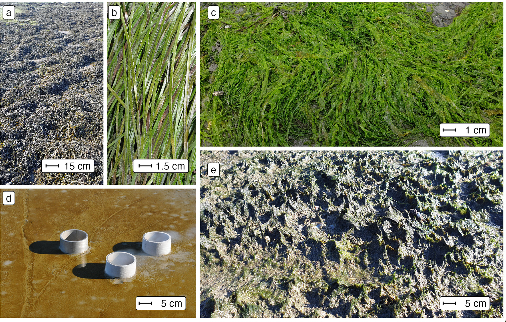
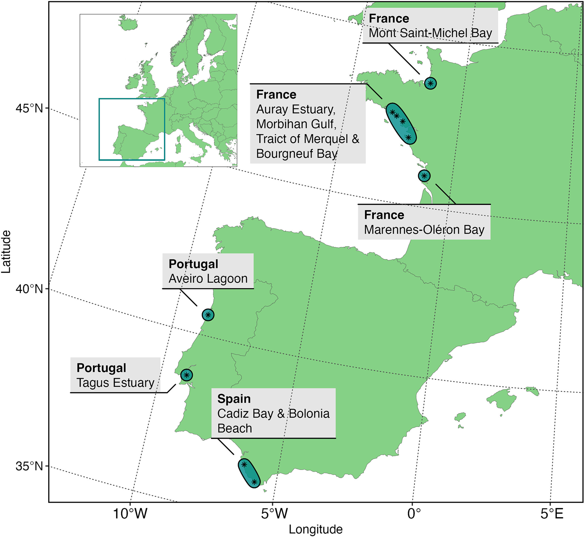
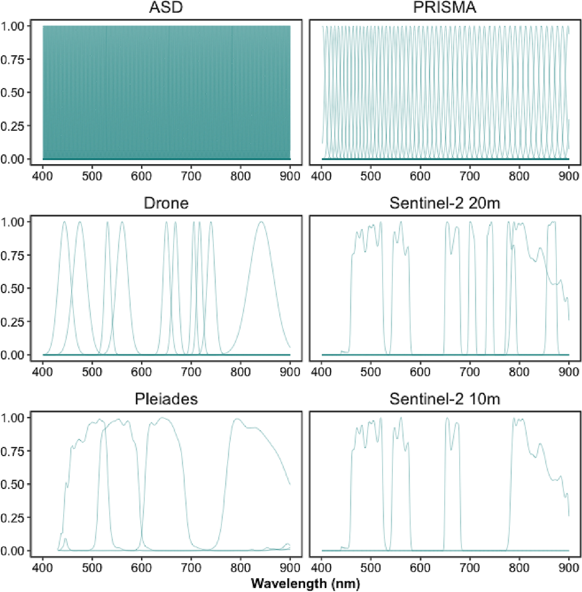
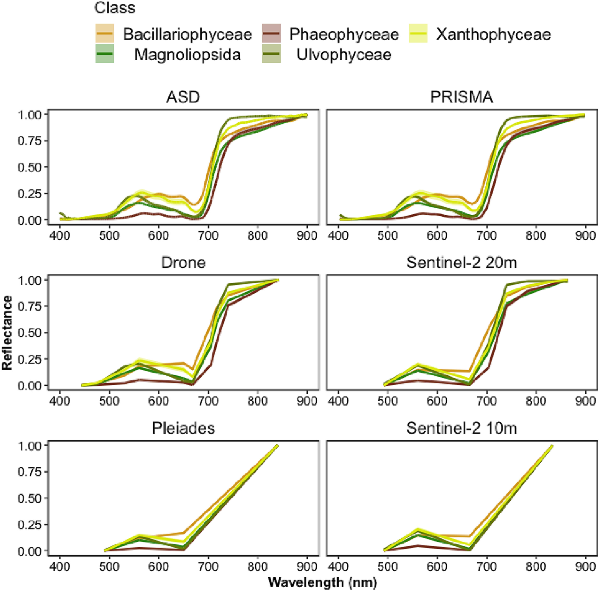
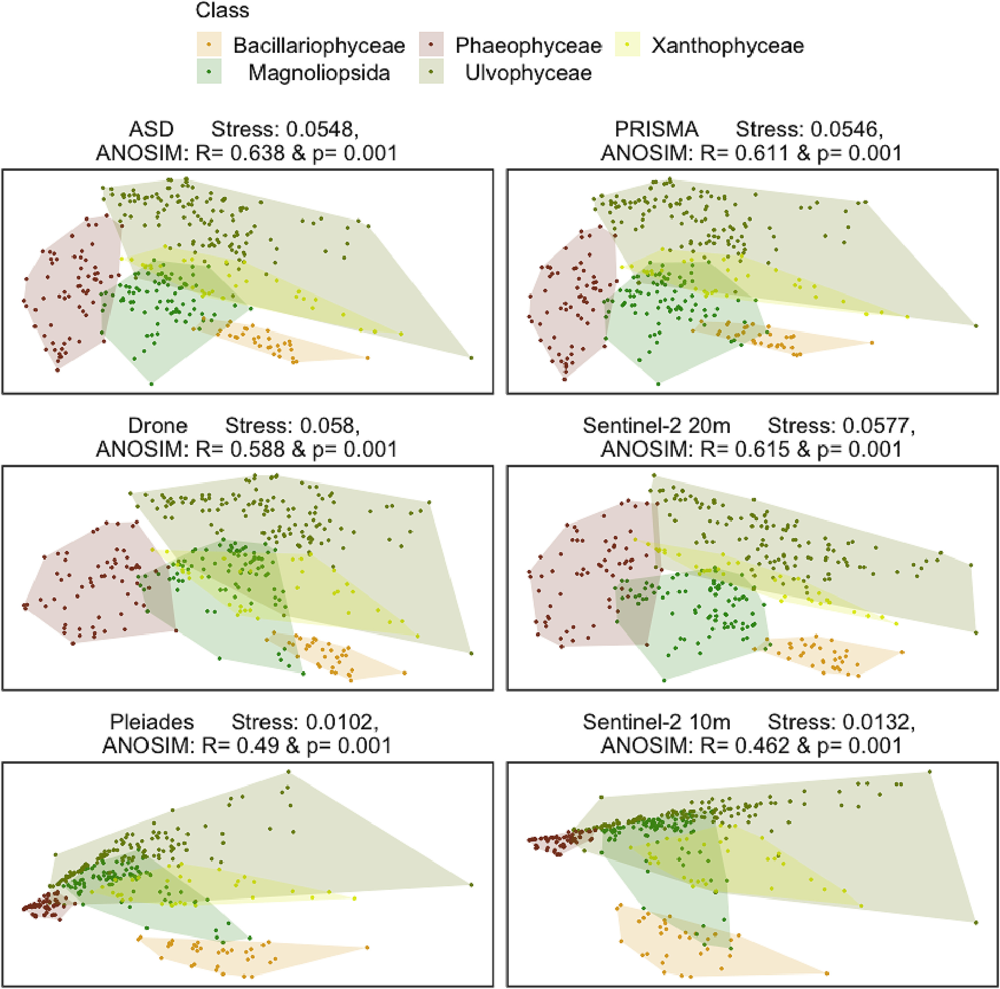
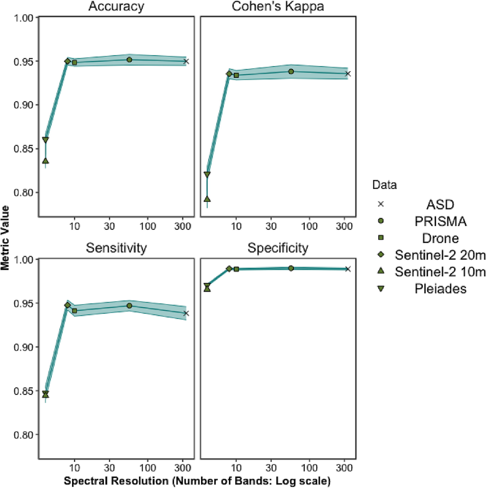
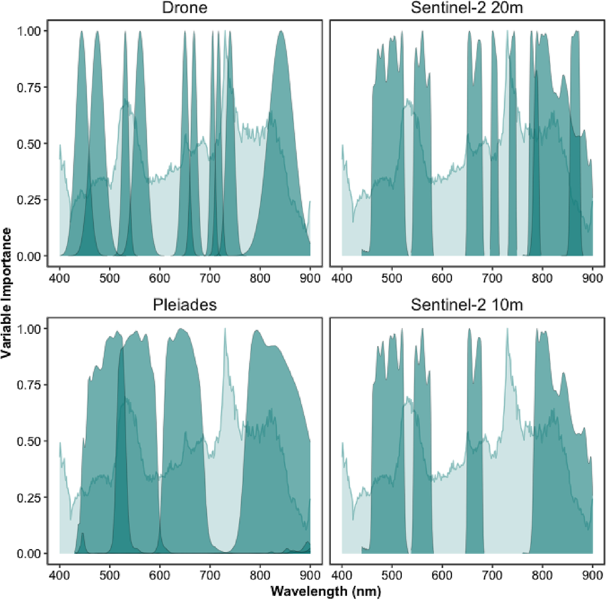
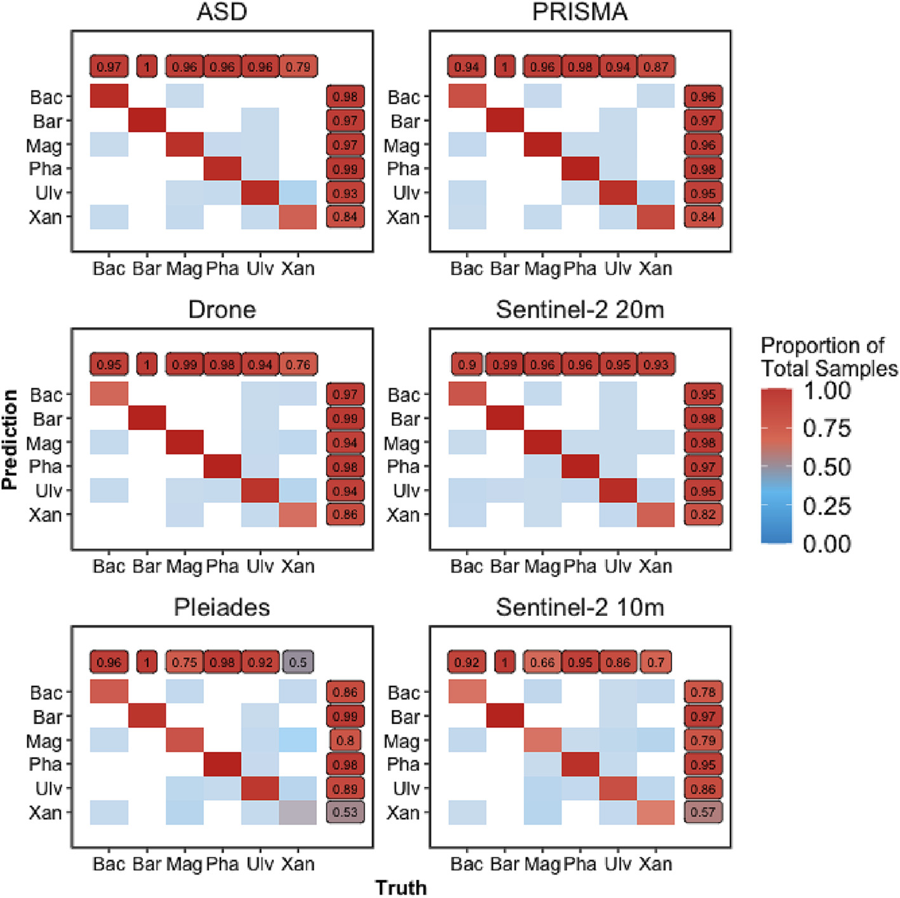

2 Chapter 2: Multi- and hyperspectral classification of soft-bottom intertidal vegetation using a spectral library for coastal biodiversity remote sensing
2.1 Introduction
Soft-bottom intertidal ecosystems support a diversity of habitats (seagrass meadows, honeycomb worm reefs, oyster reefs, mudflats) and biological communities worldwide (Mouritsen and Poulin 2002; Van Der Maarel 2003; Murray et al. 2019). The richness and diversity these habitats contain help to provide numerous ecosystem services, such as protection against coastal erosion, carbon regulation, oxygen production, seasonal habitat for migratory birds (Zoffoli et al. 2022), and reserves and nurseries for fisheries (Gardner and Finlayson 2018). However, the significant roles of intertidal areas for biodiversity and the ecosystem services they provide are not universally known (R. K. F. Unsworth et al. 2019; R. K. F. Unsworth, Nordlund, and Cullen-Unsworth 2019; R. K. Unsworth et al. 2022; Reddin et al. 2022). Like the majority of coastal ecosystems worldwide, intertidal areas are exposed and vulnerable to anthropogenic pressures, particularly more so due to their closer proximity to potentially destructive human activity (Murray et al. 2019; Green et al. 2021). Global warming, sea-level rise and the rising frequency of extreme climatic events lead to a reduction of their surface (Masson-Delmotte et al. 2021), and to a diminution of their capability to recover from perturbations (Schiel et al. 2021). The effects of climate change impact intertidal habitats inconsistently; declines of certain species and the proliferation of others (Bryndum-Buchholz et al. 2019). Intertidal areas are also directly degraded by human activities, such as coastal urbanization (Momota and Hosokawa 2021), use of various biochemical contaminants (Durou et al. 2007; Hope et al. 2021), eutrophication (Cardoso et al. 2004), land reclamation (Sedano et al. 2021), and shellfish farming (Garmendia et al. 2021). These pressures impact intertidal biodiversity (Beltrand et al. 2022) and the ecosystem services it provides (Gardner and Finlayson 2018; Brondízio et al. 2019).
To reduce these impacts and improve the protection of intertidal areas, several measures have been implemented over the past decades in Europe, such as the Water Framework Directive (WFD, Parliament and Council 2001), and the Marine Strategy Framework Directive (MSFD, Parliament and Council 2008). However, according to the Intergovernmental Science-Policy Platform on Biodiversity and Ecosystem Services (IPBES, Brondízio et al. 2019), current efforts are insufficient to reach the objectives of ecosystem conservation and sustainable exploitation. The ecological status of many intertidal areas have never been evaluated, with many areas uncharacterised. Even in documented areas, there are many socio-environmental challenges to implementing efficient protection and sustainable exploitation (R. K. F. Unsworth et al. 2019). Providing updated and accurate maps of intertidal areas is a prerequisite to addressing such challenges (McKenzie et al. 2020). However, the traditional methods for mapping rely on field surveys to estimate species abundance, biomass and habitat surface, which are time-consuming and labor-intensive (Nijland, Reshitnyk, and Rubidge 2019; Olmedo-Masat et al. 2020). The collected data are also limited by sampling constraints, as many intertidal areas are difficult to access. Remote sensing can overcome these issues by acquiring temporally and spatially resolved observations of coastal areas (Papathanasopoulou et al. 2019; Veettil et al. 2020). Likewise, the use of drones can increase the surveyed area compared to traditional survey methods while providing greater spatial resolution and flexibility than satellite imagery (Gomes et al. 2018).
Marine vegetation, defined as any species of plant that, at any time in its life, must inhabit water, other than freshwater, includes a wide range of highly important intertidal species, such as seagrasses, mangroves and marine algae. In the visible and near-infrared range (VNIR), exposed intertidal vegetation can be identified by its spectral reflectance (Olmedo-Masat et al. 2020; Douay et al. 2022). Solar irradiance is absorbed by plant pigments in the visible spectral range (400 to 700 nm: Hallik et al. 2017), while in the NIR range (700 to 900 nm), light is reflected by tissues in pluricellular organisms (Susan L. Ustin and Jacquemoud 2020), and by the sediment background for biofilms composed of unicellular photoautotrophs (Barillé et al. 2011). The spectral signature or lack thereof can be used as a marker of the different classes of organisms (Thorhaug, Richardson, and Berlyn 2007). Reflectance is increasingly being used to measure Essential Biodiversity Variables (EBVs) in coastal ecosystems, such as species traits or ecosystem structure and function (Pereira et al. 2013; Muller-Karger et al. 2018). Time-series derived from satellite observations also make it possible to study changes in biodiversity metrics and environmental drivers over decades, as demonstrated recently for the monitoring of seagrass status (Zoffoli et al. 2021; Lizcano-Sandoval et al. 2022), or macroalgae invasions (Hu, Hu, and Ming-Xia 2017; Santos et al. 2020). Most satellite sensors are multispectral (Joyce et al. 2009; Xue and Su 2017), and generally measure the reflectance using three to ten spectral bands in the VNIR spectral domain. Depending on the band numbers and characteristics, the discrimination of different types of marine vegetation can be limited (Kutser, Vahtmäe, and Martin 2006; Casal et al. 2013). Hyperspectral missions such as PRecursore IperSpettrale della Missione Applicativa (PRISMA), or EnMAP acquiring data along a large number of narrow spectral bands could improve habitat identification accuracy (Susan L. Ustin et al. 2004; Hestir et al. 2015). However, these sensors often provide relatively low spatial and temporal resolutions (Veettil et al. 2020), can contain high levels of noise per spectral band, and are not openly available resources (e.g. PRISMA imagery: 30 m pixel size, 29 day orbit repeat cycle and are only available on prior request or EnMAP imagery: 30 m pixel size and a 27 day orbit repeat cycle).
Mapping intertidal habitats of ecological importance, such as seagrass beds, can be achieved with a multispectral resolution in the case of exposed monospecific meadows observed during low tide (Zoffoli et al. 2020, 2022). However, when seagrass are mixed with other green vegetation, discrimination with multi- or even hyperspectral sensors (in situ and satellite) is challenging (Phinn et al. 2018; Veettil et al. 2020). Green macroalgae and more specifically the taxonomic class of Ulvophyceae share the same pigmentary composition with seagrass and should be a priori more complex to discriminate (Oiry and Barillé 2021). Other taxonomic classes common in intertidal soft-bottom environments such as Xanthophyceae and Bacillariophyceae could also be confused with seagrass when present at low cover (Zoffoli et al. 2020). It is generally agreed that the identification at broad taxonomic levels (eg. class level) is more precise than at the species level (Kutser, Vahtmäe, and Martin 2006; Casal et al. 2013). Assessing the ability of a sensor to discriminate seagrass meadows from other intertidal vegetation can be explored with spectral libraries. They have been used to study the spectral discrimination between macroalgal species (Casal et al. 2013; Dierssen, Chlus, and Russell 2015; Chao Rodríguez et al. 2017; Mcilwaine, Casado, and Leinster 2019; Olmedo-Masat et al. 2020; Douay et al. 2022), and to identify different seagrass species (Fyfe 2003) or to differentiate seagrass from other nearshore vegetation types (Légaré et al. 2022). By applying to in situ spectra collected with a spectroradiometer the spectral responses function of multi- and hyperspectral sensors, it is possible to investigate their abilities to classify intertidal green macrophytes. In particular, the possibility to discriminate seagrass from green macroalgae at a multispectral resolution remains to be studied using machine learning approaches.
This study aimed at analysing the potential of multi- and hyperspectral satellite missions (Pleiades, Sentinel-2, and PRISMA), as well as a multispectral drone sensor, for the discrimination of green macrophytes from low tide soft-bottom intertidal areas when exposed using remote sensing. A spectral library of the spectral signatures of seagrass, green macroalgae, and other intertidal vegetation was compiled from measurements performed with a field spectroradiometer. This library represents a novel taxonomic and spatial coverage with spectra from a wide array of exposed soft-bottom intertidal habitats collected across almost 15 degrees of latitude. High-resolution spectra were degraded to each sensor spectral resolution. A combination of multivariate and machine learning algorithms were then performed to compare the ability of the different spectral resolution data at distinguishing the main taxonomic classes of intertidal vegetation. The wavelengths which best discriminated green macrophytes were identified and recommendations given on potential future satellite sensors.
2.2 Materials and Methods
2.2.1 Spectral Reflectance Acquisition
Spectral reflectance data were collected from a range of macroalgal, microphytobenthic and seagrass dominated soft-bottom intertidal areas. Samples were grouped at the class level: Magnoliopsida (Seagrasses), Ulvophyceae (Green Macroalgae), Phaeophyceae (Brown Macroalgae), Xanthophyceae (Yellow Algae) and Bacillariophyceae (Diatoms: Table 2.1 & Figure 2.1). Brown macroalgae growing on rocky substrates were added as they are often found stranded in the intertidal zone. Spectral reflectance were also recorded from sediment areas without clear vegetation, hereafter referred to as “bare sediment” for the sake of simplicity. Scientific names and taxonomy were based on the World Register of Marine Species (WORMS). Species were identified in situ when recently exposed but not covered by a layer of water.

Multiple field campaigns taking place from 2 hours prior to 2 hours post minimum tide were carried out across temperate intertidal areas along the Western Atlantic coastline during the summer months (Figure 2.2). The campaigns took place in France in Bourgneuf Bay (Barillé et al. 2010, 2011; Zoffoli et al. 2020), Marennes-Oléron Bay, Auray Estuary, Mont-Saint-Michel Bay, Morbihan Gulf and Traict of Merquel, in Spain in Bolonia Beach (Roca et al. 2022) and Bay of Cadiz (Zoffoli et al. 2020), and in Portugal in the Tagus Estuary and Aveiro Lagoon.

2.2.2 Data Analysis
2.2.2.0.1 Spectral Degradation
The efficacy, efficiency and ability of classifying intertidal soft-bottom vegetation were assessed for a variety of remote-sensing sensors, including two multispectral satellite sensors (the high-resolution imager (HiRI) onboard Pleiades and the multi-spectral instrument (MSI) onboard Sentinel-2), one hyperspectral satellite sensor (the hyperspectral camera (HYC) onboard PRISMA satellite) and one airborne multispectral sensor (MicaSense RedEdge MX-dual Sensor on board a DJI Matrice 200 drone). These sensors cover a gradient of spectral resolution from multispectral to hyperspectral (Figure 2.3). The spectral response functions of Pleiades and Sentinel-2 were used to degrade the hyperspectral library to the respective resolution of each sensors. The highest spatial resolution of Sentinel-2 (10 m) consists of 4 spectral bands while the 20 m sensor has 4 additional bands in the VNIR spectral range (total 8 bands). Sentinel-2 spectral bands, such as at 443 nm, were not used because its spatial resolution (60 m) is too coarse for intertidal seagrass mapping (Zoffoli et al. 2020). To degrade the ASD library to the PRISMA spectral resolution, only central wavelengths and bandwidths (from 400 to 900 nm) were obtained from the Agenzia Spaziale Italiana (ASI 2020). Likewise, central wavelengths with bandwidths were available for the Micasense (“Drone” henceforth). Therefore, the mean of the reflectance values included in the bandwidth of each PRISMA and Drone function band were computed. Across all sensors, a moving average was applied to the ASD spectral library with a 5 nm smoothing window to reduce instrument-induced noise in the data.

2.2.2.0.2 Standardisation
All spectra were standardised to reduce the effect of variable biomass, density or thickness of sample, with a Min-Max transformation (Cao et al. 2017). This calculation emphasised the spectral shapes in the visible range associated with the pigment composition (Douay et al. 2022):
\[ R_{i}^*(\lambda) = \frac{R_{i}(\lambda)-min(R_{i}) }{max(R_{i})-min(R_{i}) }\]
where \(R_{i}(\lambda)\) is the reflectance at a specific wavelength (\(\lambda\)) for a specific spectrum (i), where min(\(R_{i}\)) and max(\(R_{i}\)) are the corresponding minimum and maximum values.
2.2.2.1 Statistical Analysis
To visually assess the differences between classes across different spectral resolutions dissimilarity matrices were computed for all vegetative classes, with the cosine distance to compute a Spectral Angle Mapper (SAM). The SAM algorithm considers that each spectrum is a vector in \(n\)-dimensions space, \(n\) being the number of bands, and measures the angle between two spectra to determine their dissimilarity (Kruse et al. 1993). The difference between classes were visualised and statistically assessed with non-metric Multi-Dimensional Scaling (nMDS) ordination and Analysis of Similarity (ANOSIM) from the ‘vegan’ package within the programming language R (Oksanen et al. 2024). ANOSIM was carried out on the SAM distance matrix using 999 permutations.
To assess the ability of different sensors at classifying intertidal vegetative and non vegetative classes (bare sediments, Bacillariophyceae, Magnoliopsida, Phaeophyceae, Ulvophyceae & Xanthophyceae) from their spectral reflectance data, supervised Machine Learning (ML) algorithms were applied from the “tidymodels” ecosystem of packages within the programming language R (Kuhn and Wickham 2020; R Core Team 2023). Multiple models were developed (Random Forest, XGBoost and Multinomial Classifiers) with relatively similar results. The model described here was an ensemble decision tree classification approach; Random Forest from the “ranger” package (Wright 2024). As Random Forest employs randomisation of trees, 20 repetitions of the analysis were carried out to avoid over or under representation of specific samples. Spectral data were split into training and testing sets using a proportion of 0.75 to 0.25 using the response variable to stratify samples and reduce group imbalance. Training data were then further split into 30 training and validation datasets using bootstrap resamples to allow hyper-parameter tuning from the “rsample” package (Frick et al. 2024). Class was modelled as a function of all available features (standardised reflectance of each wavelength), where all features displaying zero variance across all classes were removed before model tuning as zero variance values would provide no additional information for the models. This meant only the first three bands of Pleiades and Sentinel-2 at 10 m were evaluated as their highest bands in the NIR showed no variance. Models were tuned to maximise the Area Under the Curve of the Receiver Operating Characteristic (ROC), which measures the diagnostic ability of a classifier based on the ratio of false positive and true positive rate. Accuracy, Cohen’s kappa (an accuracy measure that takes into account class size discrepancy), sensitivity and specificity were calculated using the ‘yardstick’ package, while the ‘vip’ package was used to calculated variable importance (Kuhn, Vaughan, and Hvitfeldt 2024; Greenwell and Boehmke 2023). Variable importance will show the relative importance of different wavelengths and was calculated by the prediction error, using permuted out-of-bag data and comparing differences to the prediction error of permuted predictor variables.
2.3 Results
2.3.1 Spectral Signatures at Different Spectral Resolutions
At hyperspectral resolution (ASD, PRISMA), the differences among vegetative habitats were obvious, with the highest dissimilarities observed from 550 – 650 nm and from 700 – 850 nm (Figure 2.4). In particular, the spectral characteristics among the classes were more conspicuous in the green - red spectral range, such as reflectance peaks at 550 nm (Magnoliopsida, Ulvophyceae, Xanthophyceae), 600 nm (Bacillariophyceae), and 650 nm (Xanthophyceae and Bacillariophyceae). The absorption band at 675 nm, present in every class, corresponded to chlorophyll a while at 630 nm a smaller absorption band for the Bacillariophyceae and the Xanthophyceae corresponded to chlorophyll c. Phaeophyceae was the class showing the lowest reflectance in the visible range. All classes but the Ulvophyceae had a positive slope in the NIR. The degradation to a multispectral resolution made these spectral features harder and or impossible to distinguish. The differences between vegetation classes were more pronounced for the drone and Sentinel-2 20 m sensors (8 - 10 spectral bands) than for the Pleiades and Sentinel-2 10 m sensors (4 spectral bands).

2.3.2 Spectral Dissimilarity Between the Taxonomic Classes
The nMDS ordinations calculated with a cosine distance showed that all vegetation classes could be distinguished with a hyperspectral sensor (ASD, PRISMA), despite some overlaps between the Magnioliopsida, Ulvophyceae and Xanthophyceae (Figure 2.5). Interestingly, similar ordination patterns were also observed for the multispectral sensors with the highest number of bands (i.e., Drone, Sentinel-2 20 m). The greatest dissimilarity between classes was observed for the ASD (R = 0.638 & p = 0.001). The differences between PRISMA, the Drone and Sentinel-2 at 20 m were very similar (PRISMA: R = 0.611 & p = 0.001, Drone: R = 0.588 & p = 0.001 & Sentinel-2 at 20 m), while Pleiades and Sentinel-2 at 10 m were far lower (Pleiades: R = 0.49 & p = 0.001 & Sentinel-2 at 10 m). Strong overlaps were observed between the classes Magnioliopsida and Ulvophyceae at the low spectral resolution of Pleiades and Sentinel-2 10 m.

2.3.3 Accuracy Across Sensors and Importance of Wavelengths
When assessed by Random Forest modelling, accuracy metrics of different spectral resolutions showed that Sentinel-2 20 m and Drone spectra gave high mean accuracy regardless of accuracy metric (Accuracy: 0.95 ± 0.004 for Sentinel-2 20 m & 0.948 ± 0.004 for Drone. Cohen’s Kappa Accuracy: 0.935 ± 0.006 for Sentinel-2 20 m & 0.934 ± 0.005 for Drone: Figure 2.6 & Table 2.2). Above a spectral resolution of 10 bands, there was no gain in mean accuracy even with large increases in spectral resolution (Accuracy: 0.95 ± 0.005 for ASD & 0.951 ± 0.006 for PRISMA. Cohen’s Kappa Accuracy: 0.936 ± 0.006 for ASD & 0.938 ± 0.008 for PRISMA). The sensors with the lowest spectral resolution (Pleiades and Sentinel-2 10 m) showed the lowest accuracy, yet still were accurate around 80 to 90% of the time (Accuracy: 0.861 ± 0.006 for Pleiades & 0.835 ± 0.008 for Sentinel-2 10 m. Cohen’s Kappa Accuracy: 0.821 ± 0.008 for Pleiades & 0.792 ± 0.005 for Sentinel-2 10 m). Likewise, model specificity and sensitivity showed the greatest values from 8 spectral bands and above, but no increase was shown from 10 to 300 bands (Sensitivity: 0.948 ± 0.006 for Sentinel-2 20 m, 0.941 ± 0.006 for Drone, ± 0.006 for PRISMA & 0.938 ± 0.008 for ASD; Specificity: 0.989 ± 0.001 for Sentinel-2 20 m, 0.989 ± 0.001 for Drone, ± 0.001 for PRISMA & 0.989 ± 0.001 for ASD). Below 8 spectral bands, mean sensitivity and specificity were lowest, yet still around 85% (Sensitivity: 0.847 ± 0.008 for Pleiades & 0.844 ± 0.008 for Sentinel-2 10 m; Specificity: 0.97 ± 0.001 for Pleiades & 0.966 ± 0.002 for Sentinel-2 10 m). Standardised variable importance, the relative amount the inclusion of a variable in the model affected its’ performance, showed the wavelengths the model considered most important (Fig. 7). Consistently across all spectral resolutions, wavelengths 517–556 nm were shown to be highly important. When present, wavelengths around 722–754 nm were the most important. When the variable importance of the ASD was overlaid on the response functions for the different multispectral sensors, the ability of each sensor to effectively sample the wavelengths of interest become clearer (Fig. 8). The Drone and Pleiades sensors effectively sample the top of the peak in importance from 517 to 556 nm, while Sentinel-2 (10 m and 20 m) is only sampling the edges of the peak. Both Pleiades and Sentinel-2 at 10 m did not sample the highest peak of importance from 722 to 754 nm, while the Drone and Sentinel-2 at 20 m only sampled one side of this peak. Generally, the Drone is sampling all the major and minor peaks of importance apart from one minor peak around 780 nm.

Standardised variable importance, the relative amount the inclusion of a variable in the model affected its’ performance, showed the wavelengths the model considered most important (Figure 2.7). Consistently across all spectral resolutions, wavelengths 517–556 nm were shown to be highly important. When present, wavelengths around 722–754 nm were the most important.

When the variable importance of the ASD was overlaid on the response functions for the different multispectral sensors, the ability of each sensor to effectively sample the wavelengths of interest become clearer (Fig. 8). The Drone and Pleiades sensors effectively sample the top of the peak in importance from 517 to 556 nm, while Sentinel-2 (10 m and 20 m) is only sampling the edges of the peak. Both Pleiades and Sentinel-2 at 10 m did not sample the highest peak of importance from 722 to 754 nm, while the Drone and Sentinel-2 at 20 m only sampled one side of this peak. Generally, the Drone is sampling all the major and minor peaks of importance apart from one minor peak around 780 nm.

2.3.4 Confusion Matrices
Models accurately classed bare sediments consistently, regardless of spectral resolution (Figure 2.9). Ulvophyceae appeared to be mislabeled the most, while Magnoliopsida and Phaeophyceae showed consistently high prediction accuracy, especially by the Drone data. Across all spectral resolutions a small number of Magnoliopsida samples were mislabeled as Bacilliariophyceae, Xanthophyceae and Ulvophyceae. A few Bacilliariophyceae and Ulvophyceae samples were incorrectly labeled as Magnoliopsida. Likewise, identification of Xanthophyceae was consistenetly poor across all spectral resolutions apart from Sentinel-2 at 20 m (Sensitivity: 0.79 ASD, 0.87 PRISMA, 0.76 Drone, 0.93 Sentinel-2 at 20 m, 0.7 Sentinel-2 at 10 m and 0.5 Pleiades and Specificity: 0.84 ASD, 0.84 PRISMA, 0.86 Drone, 0.82 Sentinel-2 at 20 m, 0.57 Sentinel-2 at 10 m and 0.53 Pleiades). Pleiades and Sentinel-2 at 10 m had the worst Magnoliopsida classification (Sensitivity: 0.66 Sentinel-2 at 10 m and 0.75 Pleiades; Specificity: 0.79 Sentinel-2 at 10 m and 0.8 Pleiades).

2.4 Discussion
2.4.1 Spectral Library and Vegetation Classification
Spectral libraries have been used in coastal areas to analyse the capacity of hyperspectral sensors to discriminate macrophytes at different taxonomic resolutions (Mcilwaine, Casado, and Leinster 2019; Douay et al. 2022; Diruit et al. 2022; for earlier references see Chao Rodríguez et al. 2017) or to estimate the background contribution on benthic diatoms reflectance spectra (Barillé et al. 2011). The spectral library built up for this work was used to study the discriminatory ability of exposed soft-bottom intertidal vegetation at a class taxonomic level for a variety of remote-sensing instruments. Importantly, the classifier was designed to be applicable to both multi- and hyperspectral sensors, which is an advantage compared to classification methods only designed for hyperspectral sensors, such as derivative spectral analysis (Mcilwaine, Casado, and Leinster 2019). The discrimination accuracy of the vegetation classes increased with spectral resolution, yet showed diminishing returns for resolutions above ~10 spectral bands. The main result of this study was the capacity to discriminate seagrass from green macroalgae at a multipectral resolution with ten bands when using machine learning classification techniques. As expected, this discrimination was also possible with hyperspectral sensors. Sensors with a spectral resolution of four bands, such as Pleiades and Sentinel 2 (10 m), were poorer at accurately discriminating between green macroalgae and seagrass, as their spectral shapes were too similar (Figure 2.4 & Figure 2.6). The importance of effective seagrass classification is considerable, with seagrass conservation and restoration contributing to 16 of the 17 United Nations Sustainable Development Goals (SDGs: R. K. Unsworth et al. 2022). A practical restraint of this analysis is the necessity for non-submerged samples. However, the main challenge in mapping seagrass through remote sensing stems from confusion between similarly pigmented green algae, leading to high levels of uncertainty in current seagrass extent (McKenzie et al. 2020). Vegetation classes were consistently distinguishable from bare sediments, as found elsewhere between bare rock and algae (Douay et al. 2022). Likewise, random forest models were successfully able to discriminate between habitats (See also: Oiry and Barillé 2021; Légaré et al. 2022), with generally lower accuracy at lower spectral resolution, yet even at the lowest spectral resolutions (Pleiades and Sentinel-2 10 m) there was a mean test accuracy of 86.1% and 83.5% respectively (82.1% and 79.2% respectively when class imbalance was considered with Cohen’s kappa).
2.4.2 Spectral Discrimination and Pigment Composition
Two wavelength regions, respectively in the green (~517–556 nm) and NIR (~722–754 nm) spectral domains, were identified for their importance to the random forest model as contributing most to the discrimination between taxonomic classes (Figure 2.7). The wavelength window around 530 nm has already been recommended to distinguish different species of seagrass (Fyfe 2003), and brown from green macroalgae (Mcilwaine, Casado, and Leinster 2019). The spectral differences in the visible range between the classes are partially explained by their difference of pigment composition (Table 2.3). Pigments have different optical properties and absorption wavelengths, which influence the reflectance spectra shapes. Chlorophyll c and fucoxanthin absorb light at 636 nm and 550 nm respectively (Méléder et al. 2013). Those pigments are present amongst diatoms and brown macroalgae, but absent in green macrophytes. Xanthophyceae also contain chlorophyll c, but no fucoxanthin (Table 2.3). Chlorophylls and carotenoids absorptions can thus be used as diagnostic features to identify vegetation types that do not share the same pigmentary composition (Casal et al. 2012; Douay et al. 2022; Méléder et al. 2013). In this work, spectral differences have been observed between two classes having a similar pigment composition, the Magnoliopsida and the Ulvophyceae (Table 2.3). This indicates that the pigment concentrations and relative proportions, which can vary inside the main vegetation groups (A. Bargain et al. 2013; Beach et al. 1997), contribute to the spectral discrimination between taxonomic classes sharing the same pigment composition. Variations in the configuration of photosynthetic and accessory pigments in the 3D pigment-protein complexes within cells can also change the absorption features of taxons sharing the same pigments (Kirk 1994), while 3D disposition of the plants as a whole can alter the magnitude of reflectance (Hedley et al. 2018). As pigment absorptions correspond to narrow spectral bands (Méléder et al. 2013; Douay et al. 2022), discriminating the different types of intertidal vegetation relies on access to these specific absorption wavelengths, which explains why the hyperspectral sensors are generally more accurate than the multispectral sensors. For the latter, the lack of relevant spectral bands and the large width of the available ones does not permit to capture the diagnostic absorption features. NIR wavelengths have long been recognized as relevant for the spectral discrimination of terrestrial plant diversity (Schmidt and Skidmore 2003). At these wavelengths, spectral signatures are mainly a function of light scattering determined by the internal structure of leaves for angiosperms or thallus for macroalgae (Guyot 1990). Fyfe (2003) showed that seagrass species could be separated using NIR wavelengths, with a significant change in the slopes between 700 and 900 nm. In our study, the min-max standardization preserved the slope changes for this spectral domain while removing the difference related to biomass variations (Annaëlle Bargain et al. 2012). Within the NIR, the ~722-754 nm wavelength range was identified in our work as the most discriminant for the spectral separation of the taxonomic classes of intertidal macrophytes. The better results obtained with the Drone and Sentinel-2 (20 m) bands suggest that a multispectral sensor with 10 relevant VNIR spectral bands could discriminate the main classes considered in this study. Furthermore, the wavelengths of importance for distinguishing the taxonomic classes here showed that the sensor used by Sentinel-2 could be greatly improved by the inclusion of a band at the main peaks of importance (∼517–556 nm and ∼ 722–754 nm). Both Pleiades and Sentinel-2 at 10 m miss the the peak of highest importance. Furthermore, the marginally higher performance of the Pleiades sensor compared to that of the Sentinel-2 at 10 m could be linked to the overlap of two Pleiades bands over the ∼517–556 nm peak, while Sentinel-2 at 10 m only has bands either side of this peak. Thus, future satellite missions aiming to provide information on global habitat cover, especially including intertidal habitats, should aim to provide sensors with spectral patterns that cover the important wavelengths shown here. Dekker et al. (2018) highlighted the utility multispectral sensors could have for monitoring a wide range of aquatic systems, recommending ~26 bands between 380 and 780 nm, specifically 684 nm to capture chlorophyl-a fluorescence. From the current analysis focusing on intertidal habitats, the most important wavelengths to cover would be around 530 & 730 nm. The main reason for this difference with the recommendations of Dekker et al. (2018) is that their work was specifically focused on submerged vegetation and addressed a broader range of objectives. For an effective monitoring system, specific and broad objectives of the satellite will ideally dictate the spectral coverage of the sensors used.
2.4.3 Geographical and Temporal Range of Applicability
The present spectral library aimed to represent a diversity of soft-bottom intertidal vegetation, with the main objective of discriminating seagrass from green macroalgae. However, it has a greater diversity of green macrophytes, making unbalanced among classes. Green macroalgae represent around 33% % of the library with 121 spectra out of 366, while the yellow macroalgae only have 33 spectra. Such a difference has an impact on the statistical analysis and the discrimination results, as some species are over-represented and others underrepresented. Yet, use of Cohen’s kappa, which is an accuracy metric taking into consideration this imbalance, gave minimal difference to global accuracy. This library was built with data collected on the Atlantic coasts of France, Spain and Portugal and could be improved by the addition of new species or spectra from the existing species from other sites, both across Europe and globally.
As advised by Bajjouk et al. (2019), Z. noltei spectral data were collected at their development peak (June to September), as it is known that these macrophytes have a seasonal pigment variation (A. Bargain et al. 2013). Likewise, Légaré et al. (2022) found that depending on the season, spectral reflectance from intertidal habitats can vary significantly. As such, the current spectral library should not be used outside a late spring and summer period for Western Europe, as the varying pigment content can affect the reflectance spectral shapes. Seagrass spectral analysis could also be refined by taking into account the presence of epiphytes on their leaves, which was not done in this study. Epiphytes on seagrass leaves are known to have an impact on the shape of the reflectance spectra (Fyfe 2003), as they are composed of diatoms and brown algae. This might explain the proximity between some seagrass and brown macroalgae spectra and the overlap between the diatoms and the seagrass (Figure 2.5). The presence of epiphytes could alter the relevance of the most discriminative wavelengths between seagrass and other macroalgae. Furthermore, this library was created using 100% cover of taxonomic classes. This homogeneity is often rare at the satellite pixel scales (10 - 60 m), meaning future work should assess the spectral signatures of mixed intertidal vegetation to best predict extent of heterogeneous intertidal vegetation.
2.4.4 Implications for Coastal Biodiversity Studies
The importance of long term monitoring of ecosystems is becoming more acknowledged, especially when monitoring human impacts that may affect Essential Biodiversity Variables (EBVs), such as important habitats, species, or the functioning of those species or habitats (Lengyel et al. 2008; Perera-Valderrama et al. 2020; Livore et al. 2021; B. F. Davies et al. 2021, 2022; El-Hacen et al. 2020). This is becoming even more apparent with the acceleration of human induced climate change, which is likely to exacerbate or accelerate the effects of many other human impacts (Cramer et al. 2018; Sage 2020). Yet, in situ long term monitoring of EBVs is rare (Edwards et al. 2010). This rarity is due to a range of factors, most of which are driven by financial cost, especially if multiple fieldwork campaigns per year are required to capture seasonal variation (Condal et al. 2012). Furthermore, many human impacts can rarely be predicted a priori, so the ability to monitor their impact with sufficient previous data is circumstantial (Sheehan et al. 2021; B. F. R. Davies et al. 2022). This prior data is imperative to properly monitor human impacts and subsequently manage the activities leading to those impacts appropriately (Underwood 1992; Fox et al. 2017; Edgar et al. 2004). The extent, both temporally and spatially, of Earth Observation (EO) from satellite data alongside its accessibility means it has been used to study long term anthropogenic impacts (Hu, Hu, and Ming-Xia 2017; Santos et al. 2020; Lizcano-Sandoval et al. 2022; Zoffoli et al. 2021). Unlike in situ monitoring data, past EO data are easily available, meaning that the long term manifestation of novel phenomena can be assessed effectively (Mahrad et al. 2020). Here, it was shown that spectral reflectance measurements from a relatively low spectral resolution sensor (8-10 bands: e.g. sensor of Sentinel-2 at 20 m resolution) could effectively and accurately classify soft-bottom intertidal vegetative habitats. However, the importance of spectral coverage has also been highlighted; when EO is being utilised, the specific response functions of sensors need to be aligned effectively with the objectives of the analysis. These considerations, alongside the temporal and spatial scales; revisit times of satellites, and the ability for satellites sensors to effectively observe important spectral differences after atmospheric correction is applied, will dictate the most appropriate satellites to be included in a Global Ocean Observing System (GOOS) for optimal monitoring and understanding of the Essential Ocean Variables (EOVs) in coastal ecosystems studies.
2.4.5 Conclusions
Here, the ability to distinguish between five different vegetative intertidal habitats was assessed by analysing their spectral reflectance signatures. Around 366 spectra were compiled across the European Atlantic coast, from Southern Spain to Northern France. The spectral library was analysed at different multi- and hyperspectral resolutions with the emphasis on comparing commonly used satellite and drone sensors. This analysis not only highlighted the ability of a random forest spectral classification model to distinguish between differently pigmented habitats but also between similarly pigmented classes (green algae and seagrass). This approach could aid with ongoing efforts to accurately estimate global seagrass extent, alongside common methods such as Normalised Difference Vegetation Index (NDVI) that can provide proxies for vegetation coverage, such as monospecific intertidal seagrass meadow (Zoffoli et al. 2020). In particular, our work demonstrated the potential of discriminating intertidal seagrass from Ulvophyceae using satellite remote sensing, therefore unlocking a strong limitation for seagrass mapping in heterogeneous environments. High accuracy at distinguishing habitats was found for hyperspectral sensors as well as multispectral sensors consisting of >8 bands in the visible and near-infrared (ASD, PRISMA, Sentinel-2 at 20 m resolution and the MicaSense RedEdge MX-dual Drone sensor). As climate change alongside other anthropogenic activities continue to impact community stability and functions, and potentially altering ecosystem services, monitoring of habitats becomes ever more important. Intertidal habitats are a vital link between terrestrial and coastal marine ecosystems, yet due to their dynamic nature and inaccessibility are difficult to assess. Therefore, the ability to monitor these ecosystems over time with high spatial and temporal resolution is important. This research provides the evidence that soft-bottom intertidal green macrophytes can be accurately classified at spectral resolutions currently available from satellite missions, assuming consistency after atmospheric correction, thus offering new perspectives for EO biodiversity studies of intertidal ecosystems. It further provides advice for the next generation of satellite missions in terms of optimal spectral resolution and important wavelengths.